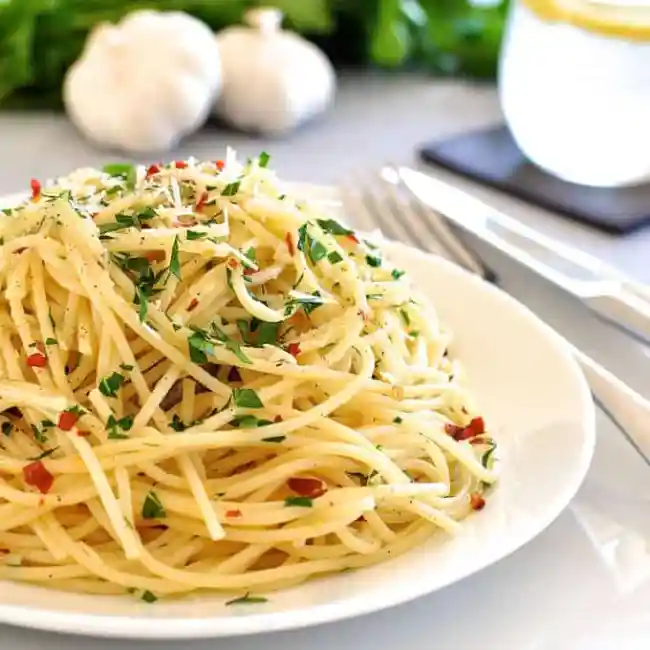

Aglio Olio Recipe

These pasta recipes are simple Italian classics you'll find in trattorias
all across Italy. “Pantry” meals that take less than 15 minutes to make, each makes enough for 6 people.
Key step (especially for simple pastas like these) - tossing the sauce with the cooked pasta and a
splash of pasta cooking water. The fat in the sauce reacts with the starch in the cooking water,
thickening the sauce and making it stick to the pasta strands. This is the proper way to make
pasta - no self respecting Italian or restaurant would ever skip this step!
Ingredients
- 1 lb/500 g dried spaghetti (or other long pasta)
- 1/2 cup extra virgin olive oil
- 10 garlic cloves (sliced)
- 1 tbsp red chilli flakes
- 1/4 cup chopped parsley
Instructions
- Cook 1lb/500g of dried spaghetti (or any other long dried pasta) in a large pot of
salted
boiling water per packet MINUS 1 minute.
- When pasta is ready, scoop out 1 cup of pasta cooking water, and drain pasta.
- Add pasta into chosen sauce with 3/4 cup pasta cooking water. Toss pasta until sauce thickens and sticks to pasta (called "emulsifying" the sauce), 1 - 2 minutes. Use more pasta water if needed to loosen sauce
- Season with salt and pepper to taste. Finish pasta per chosen recipe.
- Heat oil over medium high heat. Add garlic and cook until golden - be careful not to burn it.
- Toss with pasta and cooking water per Base Directions. Toss through parsley and chilli flakes, serve with parmesan.